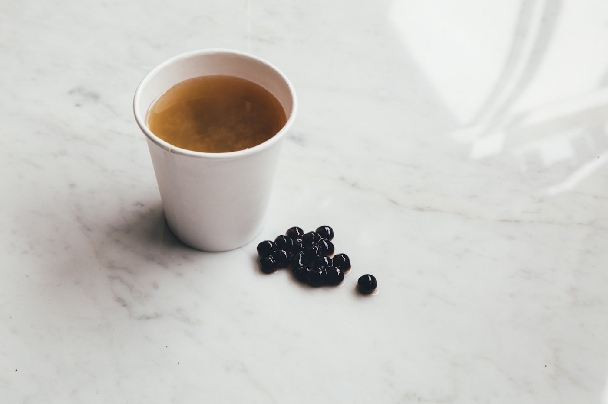

Product Story

Cloud Noodle Bowl
Built for one-bowl dinners that feel like a small reset.
The flared rim came from Naomi’s obsession with steam movement—how soup aroma rises and wraps your face before the first bite. The profile keeps heat centered while giving toppings room to breathe.
Ritual Notes
Works best for ramen, udon, and grain bowls. Designed for comfort in both hands.
Mock price: $56